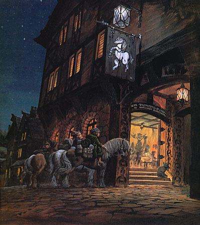
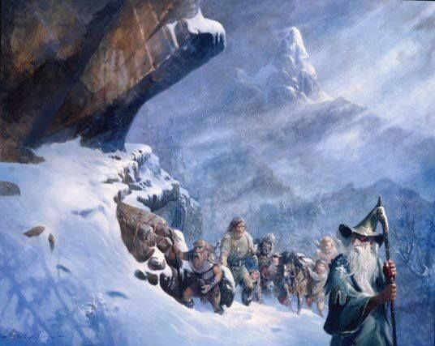
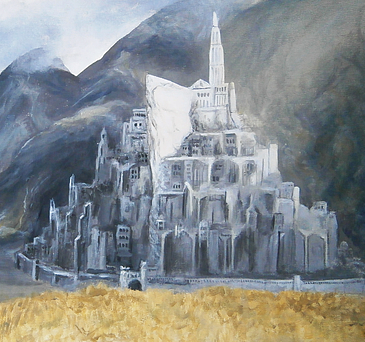
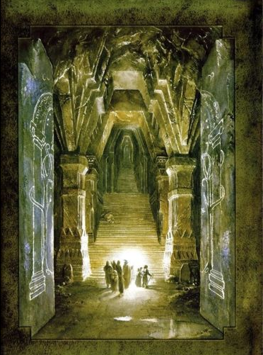
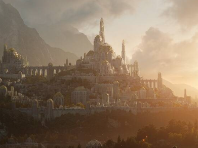
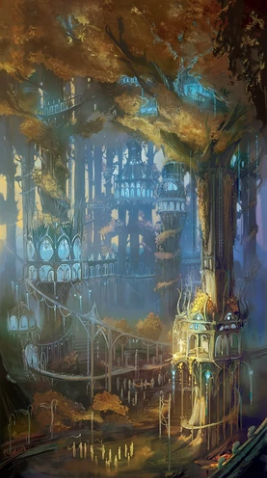
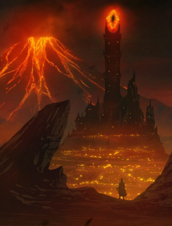
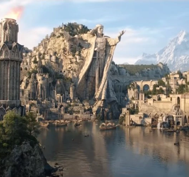
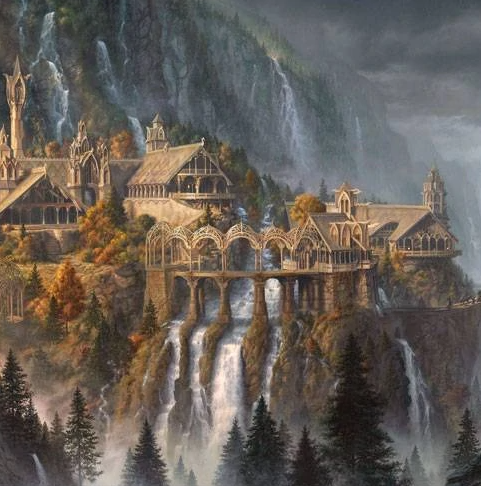

The Kingdoms
Bree village
Bree was a village of Men and hobbits, located east of the Shire and south of Fornost in Eriador. The Prancing Pony was an inn located in the village.
Caradhras
Caradhras, also called the Redhorn and Barazinbar, was one of the mightiest peaks in the Misty Mountains.
Gondor
Gondor was the most prominent kingdom of Men in Middle-earth. Gondor was founded by the brothers Isildur and Anárion, exiles from Númenor.
Khazad-dûm
Khazad-dûm, commonly known as Moria or The Dwarrowdelf, was an underground kingdom beneath the Misty Mountains (Caradhras).
Lindon
Lindon was a region of western Middle-earth. An important Elvish realm, known for its harbors and Elven ships that would embark unto the Uttermost West.
Lóthlorien
Lothlórien, also known as Lórien, was the vast woodland realm of the Galadhrim elves located near the lower Misty Mountains in northern Middle-earth.
Mordor
Mordor was a black, volcanic plain in the southeast of Middle-earth to the east of Gondor.
Númenor
Númenor was a kingdom of Men, established on an island brought up out of the sea by the Valar in the early Second Age.
Rivendell
Rivendell, also known as Imladris in Sindarin, was an Elven town and the house of Elrond located in Middle-earth.